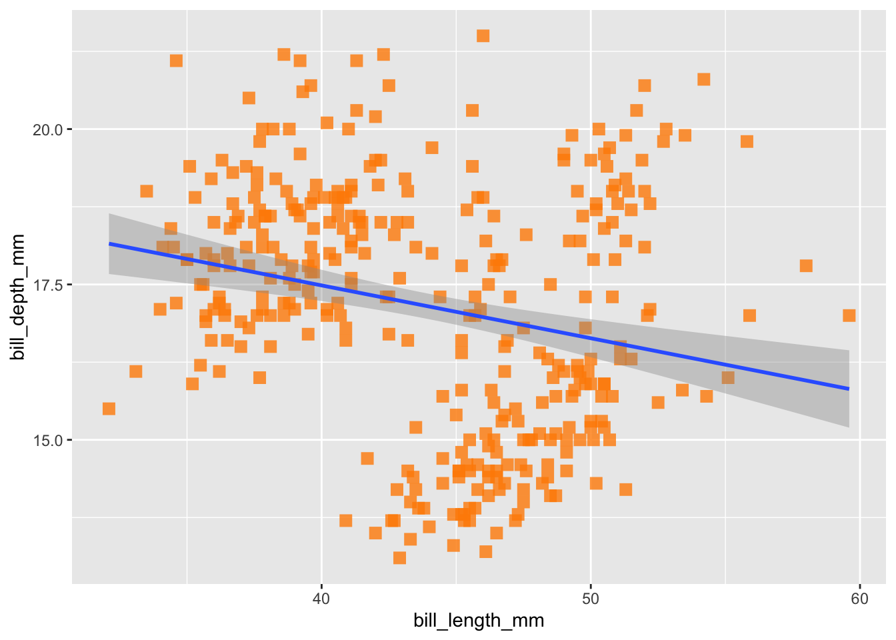
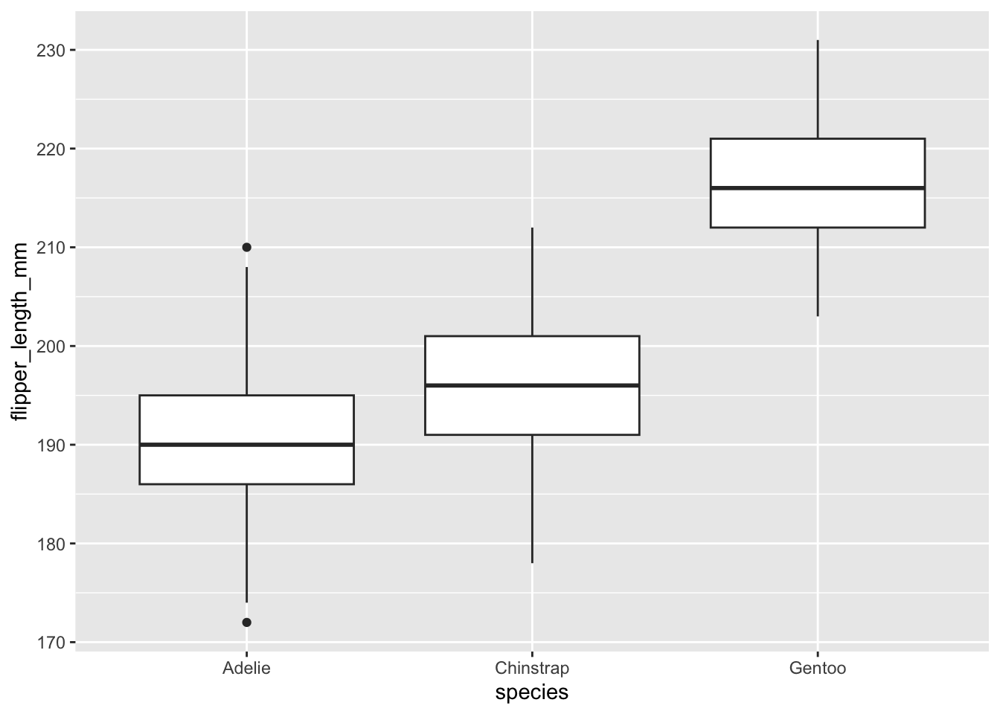
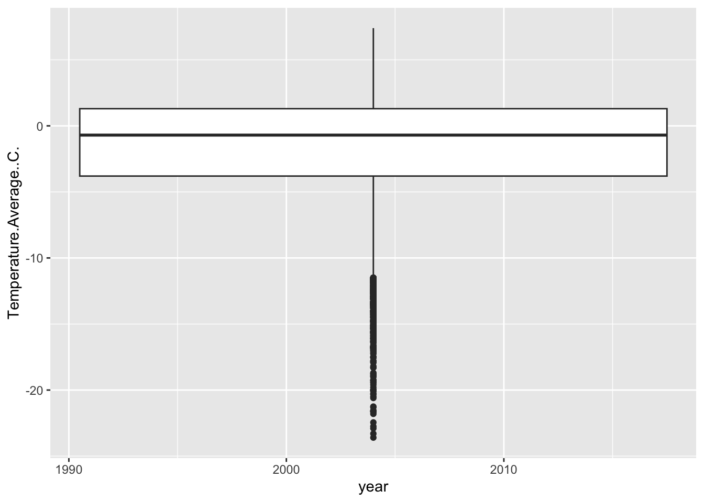
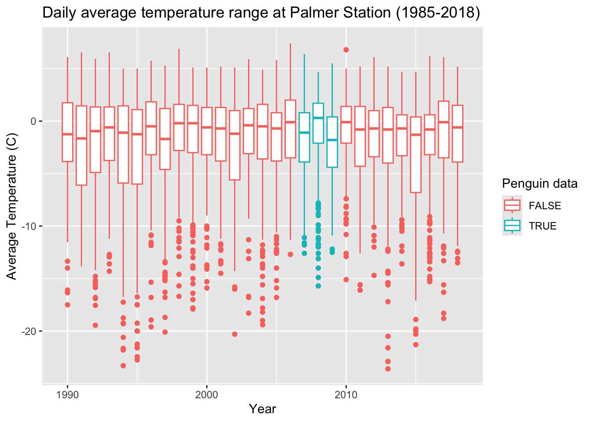
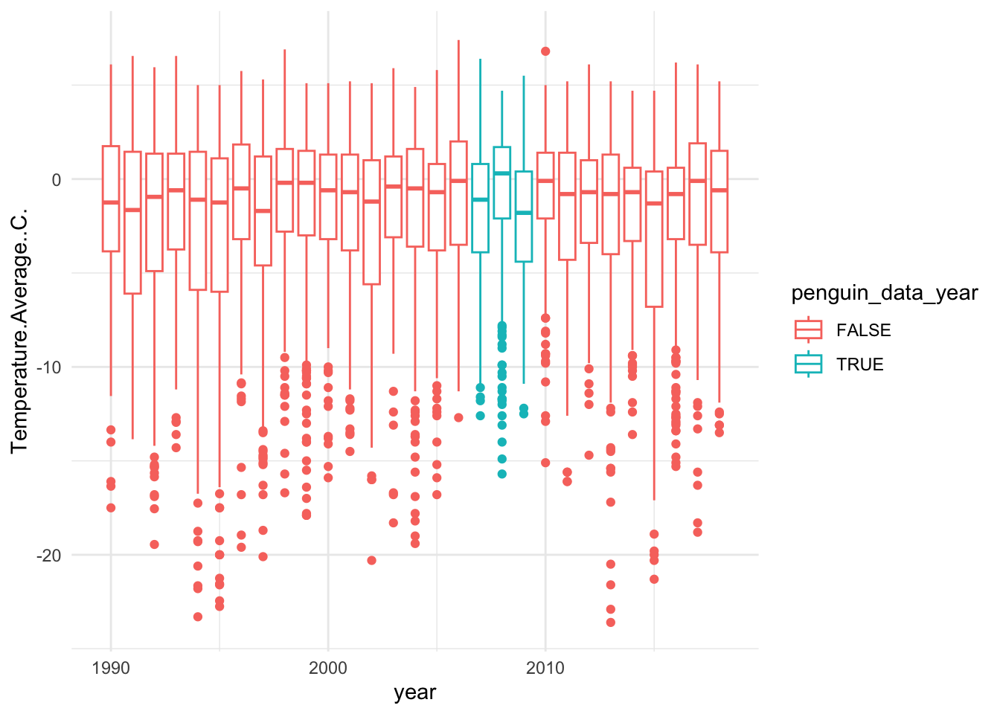
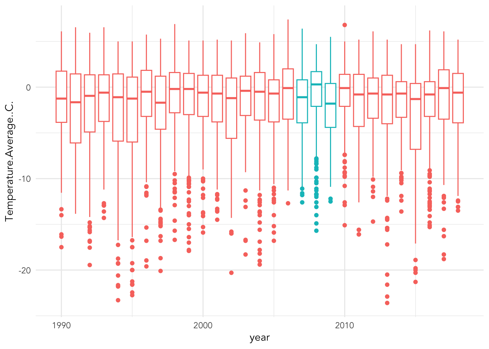

5 Visualization
5.1 Outline
- Plot architecture
ggplotaesgeom_
- Geometries
geom_pointgeom_bargeom_boxplotgeom_line
- Styling (automatic and manual)
labstheme_scale_
5.2 Plot architecture
ggplot has a template with three basic parts 1) data, 2) mappings, and 3) geometries, as well as countless other add-ons to enhance the plot. The generic syntax for combining these parts is below:
ggplot(data = <DATA>, mapping = aes(<MAPPINGS>)) + <GEOM_FUNCTION>()We’ll get into the add-ons throughout this lesson, but let’s start by building a plot base the base up. Let’s start just by including our first element, data.
ggplot(data = penguins) What we get is a blank canvas of a plot – ggplot know it wants you to plot something, but it isn’t sure what yet because you haven’t given it any specifics about the data. We get into the specifics with mappings:
What we get is a blank canvas of a plot – ggplot know it wants you to plot something, but it isn’t sure what yet because you haven’t given it any specifics about the data. We get into the specifics with mappings:
ggplot(data = penguins, mapping = aes(x = bill_length_mm,
y = bill_depth_mm)) Now ggplot knows what you want to plot, and it maps them onto the x and y axes, as we specified. But we still haven’t tolk ggplot how to map them (i.e. in what shape?). We can specify the shape using one of several
Now ggplot knows what you want to plot, and it maps them onto the x and y axes, as we specified. But we still haven’t tolk ggplot how to map them (i.e. in what shape?). We can specify the shape using one of several geom_ functions. Let’s select a ‘point’ geometry, which we use for a scatter plot of continuous x continuous variables.
ggplot(data = penguins, mapping = aes(x = bill_length_mm,
y = bill_depth_mm)) +
geom_point()## Warning: Removed 2 rows containing missing values (`geom_point()`). Now we’re getting somewhere. Let’s play around a bit with some additional arguments that you can add to the plot, such as changing the geometry transparency, size, and shape. These are all their own arguments that can be placed inside either the ggplot function or the geom function. I prefer to put them in the goem functions.
Now we’re getting somewhere. Let’s play around a bit with some additional arguments that you can add to the plot, such as changing the geometry transparency, size, and shape. These are all their own arguments that can be placed inside either the ggplot function or the geom function. I prefer to put them in the goem functions.
ggplot(data = penguins,
aes(x = bill_length_mm,
y = bill_depth_mm)) +
geom_point(alpha = .8, size = 3, shape = 15, color = "darkorange")## Warning: Removed 2 rows containing missing values (`geom_point()`).What’s powerful about ggplot is that you can add on multiple layers using the plus sign, and can even add several geometries to one plot. One geometry used for discerning trends is the geom_smooth() geometry, which will assign a trend line based on the distribution you specify, such as “lm”, “glm”, “gam”, or “loess”. Let’s stick with a basic ‘lm’ method, which will create a trend line using the coefficient from the equation lm(y ~ x), which in our case is lm(bill_depth_mm ~ bill_length_mm, data = penguins)
ggplot(data = penguins,
aes(x = bill_length_mm,
y = bill_depth_mm)) +
geom_point(alpha = .8, size = 3, shape = 15, color = "darkorange") +
geom_smooth(method = "lm")## `geom_smooth()` using formula = 'y ~ x'## Warning: Removed 2 rows containing non-finite values (`stat_smooth()`).## Warning: Removed 2 rows containing missing values (`geom_point()`).
Here we see a slightly negative relationship between bill depth and length, which we can verify by running the same linear model we just passively applied using geom_smooth():
lm(bill_depth_mm ~ bill_length_mm, data = penguins)##
## Call:
## lm(formula = bill_depth_mm ~ bill_length_mm, data = penguins)
##
## Coefficients:
## (Intercept) bill_length_mm
## 20.88547 -0.08502BUT, visualization can be an incredibly helpful tool for exploratory data analysis, particularly because it gives you the opportunity to ‘get to know’ your data. If you a penguin expert, you might be surprised by this result: bills tend to grow proportionally, and so we’d expect a positive relationship between these two variables. So, what else do we know about our data that might be hiding this relationship? Penguin species!
Species is an attribute of our data that we want to represent in our current plot, let’s say with color. Previously, we used the color argument to add in a color, and you might want to follow that same pattern now.
ggplot(data = penguins, aes(x = bill_length_mm,
y = bill_depth_mm)) +
geom_point(alpha = .8, size = 3, shape = 15, color = species) +
geom_smooth(method = "lm", se = FALSE)However, this approach won’t work because ggplot doesn’t know what “Species” is based on how we’ve input it into the figure. We need a way to tell R that “Species” is a column inside our penguins data. To do that, we include Species as part of our aesthetic mapping, because the aes() function is what cues ggplot to look inside the data for values.
ggplot(data = penguins,
aes(x = bill_length_mm,
y = bill_depth_mm,
color = species)) +
geom_point(alpha = .8, size = 3, shape = 15) +
geom_smooth(method = "lm", se = FALSE)## `geom_smooth()` using formula = 'y ~ x'## Warning: Removed 2 rows containing non-finite values (`stat_smooth()`).## Warning: Removed 2 rows containing missing values (`geom_point()`).
Now its got it! So remember, if you want to add a feature to your plot that is not related to the data (e.g. color = “blue”) it goes outside the aes function. If you want to add a feature to your plot that is related to the data (e.g. color = Species), goes inside the aes function.
Now that we’ve got that straight, let’s draw attention to what happened to our trends: Simpson’s paradox! (i.e. ‘statistical phenomenon where an association between two variables in a population emerges, disappears or reverses when the population is divided into subpopulations’) (Stanford 2021).
5.3 Selecting geometries
Let’s move on to discuss different geometries and when to use them. We’ve already noted that scatterplots with geom_point are a good candidate for continuous x continuous variables. What about when we start working with categorical variables? Let’s review a few different approaches:
geom_bar: This barplot geometry is well suited when you want to count up the observations of one categorical variable. By default, it takes only one mapping argument, x, and then calculates the counts based on the grouping of x.
ggplot(penguins, aes(x = species)) + geom_bar()
geom_boxplot: This boxplot geometry is well suited when you want to show the distribbution of a continuous variable based on categorical groupings. Just like geom_point, geom_boxplot takes a x and a y argument, but one should be continuous and one should be categorical.
ggplot(penguins, aes(x = species, y = flipper_length_mm)) + geom_boxplot()## Warning: Removed 2 rows containing non-finite values (`stat_boxplot()`).
geom_line: This line geometry is well suited when you want to show how a continuous variable changes over time, where time is a bit of a mix between a continuous and categorical variable.
weather %>%
ggplot(aes(x = Date, y = Temperature.Average..C.)) +
geom_line()
5.3.1 Combining wrangling & visualization
Let’s practice plotting using the weather data, and let’s think about our Date column as a categorical variable, with each year being a category. This will be a bit tricky, however, because the year variable is currently classified as a numeric data type, which means ggplot will want to treat it as continuous.
class(weather$year)## [1] "numeric"Because of this, ggplot gets a bit confused…
weather %>%
ggplot(aes(x = year, y = Temperature.Average..C.)) +
geom_boxplot() ## Warning: Continuous x aesthetic
## ℹ did you forget `aes(group = ...)`?## Warning: Removed 11 rows containing non-finite values (`stat_boxplot()`). So, there are two ways we can prompt ggplot to think of year as a category. One way is to coerce our year x variable into a ‘factor’, which tells R that these numbers are actually categories.
weather %>%
ggplot(aes(x = factor(year), y = Temperature.Average..C.)) +
geom_boxplot() ## Warning: Removed 11 rows containing non-finite values (`stat_boxplot()`).Another way is to assign are group aesthetic.
weather %>%
ggplot(aes(x = year, y = Temperature.Average..C., group = year)) +
geom_boxplot() ## Warning: Removed 11 rows containing non-finite values (`stat_boxplot()`).
Now, remember the importance of using visualization to explore data. Does anything look off?
It jumps out to me that our first and last years are shaped different than the others. They have no low-temperature outliers and their distributions are much smaller. Let’s use our wrangling skills to investigate.
Take a look at a summary of the lowest (min) year:
weather %>%
filter(year == min(year)) %>%
select(Date) %>%
summary(Date)## Date
## Min. :1989-04-01
## 1st Qu.:1989-06-08
## Median :1989-08-16
## Mean :1989-08-16
## 3rd Qu.:1989-10-23
## Max. :1989-12-31It only starts in April, so we are missing some data for that year. What about the final year:
weather %>%
filter(year == max(year)) %>%
select(Date) %>%
summary(Date)## Date
## Min. :2019-01-01
## 1st Qu.:2019-01-16
## Median :2019-02-14
## Mean :2019-02-14
## 3rd Qu.:2019-03-15
## Max. :2019-03-31In ends in March, so we’re also missing data for that year. So let’s filter those out and pipe that filtered data frame directly into our ggplot:
weather %>%
filter(year != min(year) & year != max(year)) %>%
ggplot(aes(x = year, y = Temperature.Average..C., group = year)) +
geom_boxplot() ## Warning: Removed 11 rows containing non-finite values (`stat_boxplot()`).5.3.2 Check in challenge
Let’s practice combining data wrangling with plotting. First, use the case_when function to mutate a new column called ‘penguin_data_year’. The condition we’d like to set is to identify the years for which we have data in the ‘penguins’ data (2007:2009) as TRUE, and all of the other years FALSE. Second, re-create the yearly tempoerature boxplot we just made, but add a color aesthetic using the ‘penguin_year_data’ to define the color. The end result should be the boxplot, but with the distributions of 2007-2009 a different color from the rest. You can do this is two steps, or bonus if you pipe it all together.
Check your answer
weather <- weather %>%
mutate(penguin_data_year = case_when(
year %in% 2007:2009 ~ T,
T ~ F
) )
weather %>%
filter(year != min(year) & year != max(year)) %>%
ggplot(aes(x = year, y = Temperature.Average..C., group = year,
color = penguin_data_year)) +
geom_boxplot() ## Warning: Removed 11 rows containing non-finite values (`stat_boxplot()`).5.4 Styling
You can save plots as objects
base_p <- weather %>%
filter(year != min(year) & year != max(year)) %>%
ggplot(aes(x = year, y = Temperature.Average..C., group = year,
color = penguin_data_year)) +
geom_boxplot() Then you can add layers to that base plot.
Let’s set colors using pre-set palettes
base_p +
scale_color_viridis_d()## Warning: Removed 11 rows containing non-finite values (`stat_boxplot()`).Or set colors manually
base_p +
scale_color_manual(values = c("darkorange","cyan4"))## Warning: Removed 11 rows containing non-finite values (`stat_boxplot()`).Add labels
base_p +
scale_color_manual(values = c("darkorange","cyan4")) +
labs(x = "Year", y = "Average Temperature (C)",
title = "Daily average temperature range at Palmer Station (1985-2018)",
color = "Penguin data")## Warning: Removed 11 rows containing non-finite values (`stat_boxplot()`).
Change themes
base_p +
scale_color_manual(values = c("darkorange","cyan4")) +
labs(x = "Year", y = "Average Temperature (C)",
title = "Daily average temperature range at Palmer Station (1985-2018)",
color = "Penguin data") +
theme_minimal()## Warning: Removed 11 rows containing non-finite values (`stat_boxplot()`).
Customize themes to change all sorts of things:
Remove legend
base_p +
scale_color_manual(values = c("darkorange","cyan4")) +
labs(x = "Year", y = "Average Temperature (C)",
title = "Daily average temperature range at Palmer Station (1985-2018)",
color = "Penguin data") +
theme_minimal() +
theme(legend.position = "none")## Warning: Removed 11 rows containing non-finite values (`stat_boxplot()`).change text
base_p +
scale_color_manual(values = c("darkorange","cyan4")) +
labs(x = "Year", y = "Average Temperature (C)",
title = "Daily average temperature range at Palmer Station (1985-2018)",
color = "Penguin data") +
theme_minimal() +
theme(legend.position = "none",
text = element_text(family = "Avenir"))## Warning: Removed 11 rows containing non-finite values (`stat_boxplot()`).